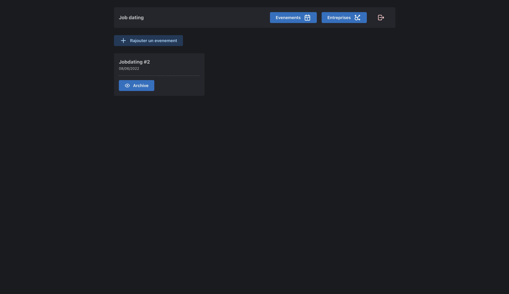
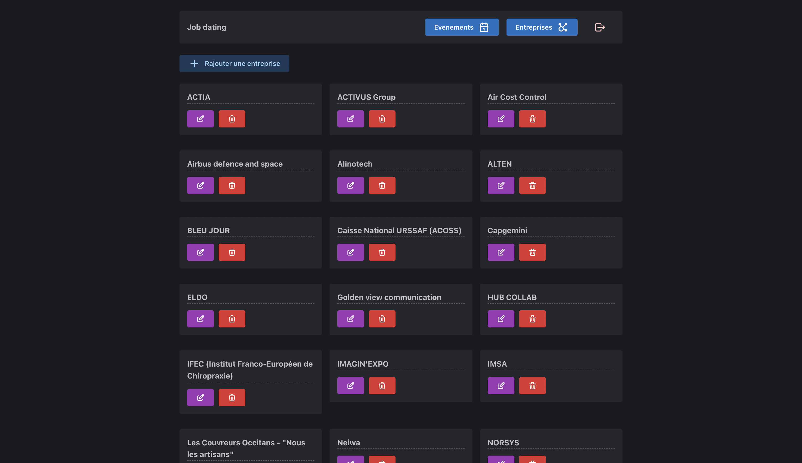

Developpement outils Jobs Dating
Lors d’une discussion avec les membres du Staff TYC ( Toulouse Ynov Campus ), en est sortie une conclusion très pertinente. “On ne sait pas quel étudiant est allé voir quelle entreprise et pendant combien de temps”.
Après une discussion entre Dmitrii Kopenkin (Mentor Junior B3 Informatique) et moi-même, nous avons décidé de proposer une solution à cette problématique.
Créer un site pour que les étudiants puissent rentrer le nom des entreprises chez qui ils sont allés pour avoir une liste de l’ensemble des étudiants.
Premier problème, au niveau de l’expérience utilisateur, le site est disponible 24h sur 24 alors que nous aimerions le rendre disponible uniquement lors des journées Jobs Dating. Second problème, comment fait-on pour être sûre que l’étudiant est allé voir l’entreprise. Et dernier problème comment rendre ce système transparent pour les entreprises.
Après quelques recherches nous nous sommes mis d’accord sur la réalisation de ces outils, on utilisera des QR codes. Sur chaque table de chaque entreprise, nous disposerons des QR codes différents que l’étudiant doit scanner au début de son entretien.
Pour limiter les interactions avec cet outil, l’inscription se fait en début de journée Jobs Dating et est contrôlée par un membre du staff. Les informations d’un étudiant sont alors stockées sur son téléphone et sont utilisées à chaque fois qu’il scanne un QR code d’entreprise.
Et tout ceci à des fins d’analyse pour le Staff mais aussi pour un bilan pour l’étudiant.
Dans les prochaines mises à jour, nous envisageons de créer une fonctionnalité d’envoie automatique d’email à chaque étudiant ayant participé à la journée Jobs Dating avec un récapitulatif des entreprises qu’il est allé voir ainsi que les contacts pour pouvoir suivre l’avancement de sa candidature.
Concernant l’aspect technique de ce projet, Dmitrii s’est occupé de la partie backend et front-end admin et je me suis chargé de la partie front-end user. Au niveau des technologies utilisées, nous avons utilisé NestJS pour le back et React Typescript pour le front avec la libraire de composant Mantine.
Le tout couplé à GitLab pour le versioning et les tests.
Ci-dessous vous pouvez voir un aperçu du panel administration :

Un petit aperçu de la page entreprise :

Et au bout de 2 semaines l’outils était testé et fonctionnel lors de la Journée Jobs Dating. Un grand soulagement pour nous et une grande satisfaction.
Ce que j’ai retenu de ce projet c’est que ce n’est pas parce que nous n’avions jamais utilisé un langage ou un Framework que le projet n’était pas réalisable. Qu’il ne faut pas baisser les bras, et qu’il faut déployer le site plus de 24h avant son utilisation, pour éviter quelques problèmes.